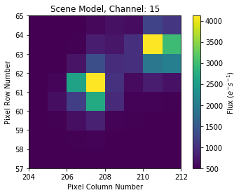
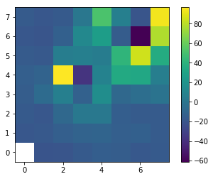
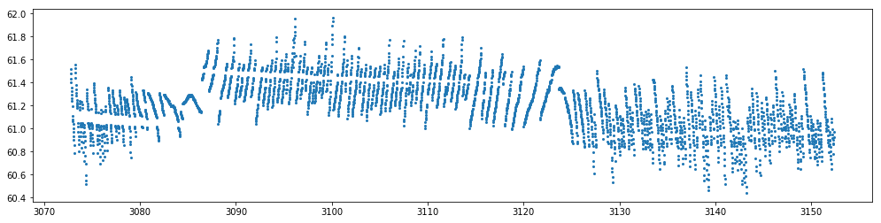
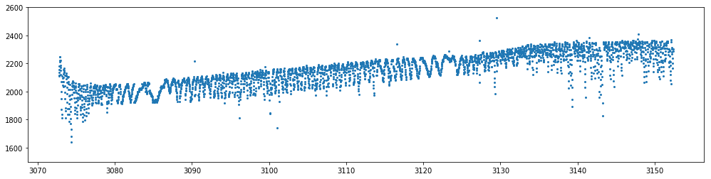

In [1]:
from pyke import KeplerTargetPixelFile
In [2]:
import matplotlib.pyplot as plt
%matplotlib inline
In [3]:
tpf = KeplerTargetPixelFile("https://archive.stsci.edu/missions/k2/target_pixel_files/"
"c14/201400000/31000/ktwo201431984-c14_lpd-targ.fits.gz",
quality_bitmask=2096639)
Downloading https://archive.stsci.edu/missions/k2/target_pixel_files/c14/201400000/31000/ktwo201431984-c14_lpd-targ.fits.gz [Done]
In [31]:
tpf.plot(bkg=True, origin='lower')

In [5]:
from pyke import SceneModel, PRFPhotometry
In [6]:
prf = tpf.get_prf_model()
Downloading http://archive.stsci.edu/missions/kepler/fpc/prf/extracted/kplr06.3_2011265_prf.fits [Done]
In [7]:
scene = SceneModel(prfs=2*[prf])
In [8]:
from oktopus.prior import UniformPrior
In [9]:
prior = UniformPrior(lb=[100., 204., 59., 100., 209., 61., 0],
ub=[3e4, 210., 64., 3e4, 213., 66., 1000.])
In [10]:
phot = PRFPhotometry(scene_model=scene, prior=prior)
In [11]:
scene.plot(*prior.mean)

In [12]:
results = phot.fit(tpf.flux + tpf.flux_bkg, method='powell',
options={'ftol': 1e-9, 'xtol': 1e-6, 'maxfenv': 2000})
0%| | 0/3576 [00:00<?, ?it/s]/Users/jvmirca/dev/oktopus/oktopus/loss.py:80: OptimizeWarning: Unknown solver options: maxfenv
self.opt_result = minimize(self.evaluate, **kwargs)
/Users/jvmirca/anaconda3/lib/python3.6/site-packages/autograd/tracer.py:48: RuntimeWarning: invalid value encountered in log
return f_raw(*args, **kwargs)
0%| | 17/3576 [00:02<09:39, 6.14it/s]/Users/jvmirca/anaconda3/lib/python3.6/site-packages/scipy/optimize/optimize.py:1850: RuntimeWarning: invalid value encountered in double_scalars
tmp2 = (x - v) * (fx - fw)
24%|██▍ | 863/3576 [02:56<09:15, 4.88it/s]/Users/jvmirca/anaconda3/lib/python3.6/site-packages/scipy/optimize/optimize.py:1851: RuntimeWarning: invalid value encountered in double_scalars
p = (x - v) * tmp2 - (x - w) * tmp1
/Users/jvmirca/anaconda3/lib/python3.6/site-packages/scipy/optimize/optimize.py:1852: RuntimeWarning: invalid value encountered in double_scalars
tmp2 = 2.0 * (tmp2 - tmp1)
30%|███ | 1074/3576 [03:40<08:33, 4.87it/s]/Users/jvmirca/anaconda3/lib/python3.6/site-packages/scipy/optimize/optimize.py:2189: RuntimeWarning: invalid value encountered in double_scalars
w = xb - ((xb - xc) * tmp2 - (xb - xa) * tmp1) / denom
100%|██████████| 3576/3576 [11:52<00:00, 5.02it/s]
In [13]:
flux = results[:, 0]
col = results[:, 1]
row = results[:, 2]
flux2 = results[:, 3]
col2 = results[:, 4]
row2 = results[:, 5]
bkg = results[:, -1]
In [18]:
residuals=phot.get_residuals()
In [32]:
plt.imshow(residuals[1000], origin='lower')
plt.colorbar()
Out[32]:
<matplotlib.colorbar.Colorbar at 0x1c1e0f2cf8>

In [34]:
plt.figure(figsize=[17, 4])
plt.plot(tpf.time, row , 'o', markersize=2)
plt.ylim()
Out[34]:
(60.366090936622591, 62.037203734176956)

In [17]:
plt.figure(figsize=[17, 4])
plt.plot(tpf.time, flux2, 'o', markersize=2)
plt.ylim(1500, 2600)
Out[17]:
(1500, 2600)
